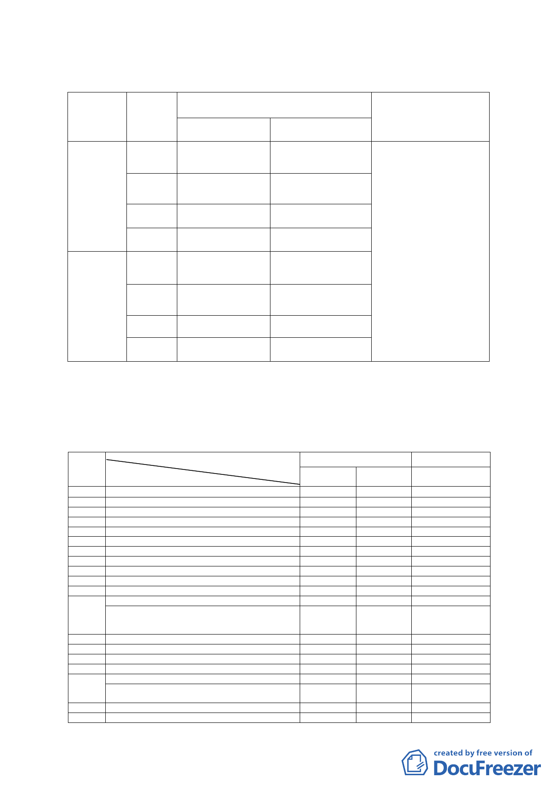

（一）使用分區及使用強度
位置
基地一
（內湖區潭
美段五小段
21、21-1、
22、22-1 地
號）
基地二
（內湖區潭
美段五小段
35、35-1 地
號）
項目
使用分區
面積
（公頃）
容積率
建蔽率
使用分區
面積
（公頃）
容積率
建蔽率
變更內容
原計畫
新計畫
辦公服務區(一) 影視音產業專用區
0.64
0.64
225％
40％
360%
60%
工商服務展售區 影視音產業專用區
0.81
225％
50％
0.81
360%
60%
變更理由
1.為利影視音產業特殊
設備使用或映演場地
規劃，並考量計畫範圍
受限「臺北松山機場飛
航管制區禁止、限制建
築」規定影響建築物高
度，放寬建蔽率之規
定。
2.參採國內外現有影視
城發展規模及媒體總
部營運發展需求，且提
高自償率及可行性，經
衡酌計畫範圍周邊現
況開發情形及整體環
境容受力，酌予調整、
提高法定容積率。
（二）允許使用項目
本計畫範圍允許使用項目主要以影視音產業及其附屬事業
組別
編號
1
2
3
4
5
6
7
8
9
10
11
12
13
14
15
16
17
18
19
（設施）為主
使用分區名稱
組別名稱
獨立、雙併住宅
多戶住宅
寄宿住宅
學前教育設施
教育設施
社區遊憩設施
醫療保健服務業
社會福利設施
社區通訊設施
社區安全設施
大型遊憩設施
公用事業設施（其他項目）
(無線電或電視設施、有線廣播電視系統、有
線播送系統、社區電臺、廣播公司、電視公司、
電信機房)
公務機關
人民團體
社教設施
文康設施之其他項目
日常用品零售業(其他項目）
（飲食成品、糧食、水果(營業樓地板面積 300
平方公尺以下)）
零售市場
一般零售業甲組
變更前
辦公服務 工商服務
區(一)
展售區
○
○
○△
○△
○△
○○
○
△△
○
○
○△
○○
△
△△
○
變更後
影視音產業專用
區
○
○
○
○
△
○
-6-